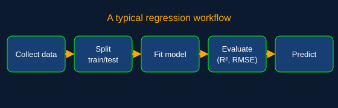

From Formula to Code
Linear regression is a good first machine learning project because the whole algorithm fits in a few lines. Below, the same five-point example from The Math page is solved twice: once by hand with NumPy, and once with the scikit-learn library.

Version 1: From Scratch with NumPy
This version translates the closed-form slope and intercept formulas directly into code:
import numpy as np
x = np.array([1, 2, 3, 4, 5])
y = np.array([2, 4, 5, 4, 5])
b1 = np.sum((x - x.mean()) * (y - y.mean())) / np.sum((x - x.mean()) ** 2)
b0 = y.mean() - b1 * x.mean()
print(f"Intercept: {b0:.2f}, Slope: {b1:.2f}")
print(f"Prediction at x=6: {b0 + b1 * 6:.2f}")
# Output:
# Intercept: 2.20, Slope: 0.60
# Prediction at x=6: 5.80Version 2: Using scikit-learn
In practice, developers use a tested library. scikit-learn expects the inputs as a 2-D array (one row per sample, one column per feature), which is why X is written with nested brackets:
import numpy as np
from sklearn.linear_model import LinearRegression
X = np.array([[1], [2], [3], [4], [5]])
y = np.array([2, 4, 5, 4, 5])
model = LinearRegression().fit(X, y)
print(model.intercept_) # 2.2
print(model.coef_) # [0.6]
print(model.score(X, y)) # R-squared: 0.6
print(model.predict([[6]])) # [5.8]Both versions agree with the hand calculation. With real datasets, you would also split the data into training and test sets so the model is judged on examples it did not learn from.
Real-World Applications
| Field | Input (x) | Predicted output (y) |
|---|---|---|
| Real estate | Square footage, bedrooms | Sale price |
| Cloud computing | Number of active users | Server CPU load |
| Software engineering | Lines of code, team size | Development effort |
| Marketing | Advertising budget | Monthly sales |